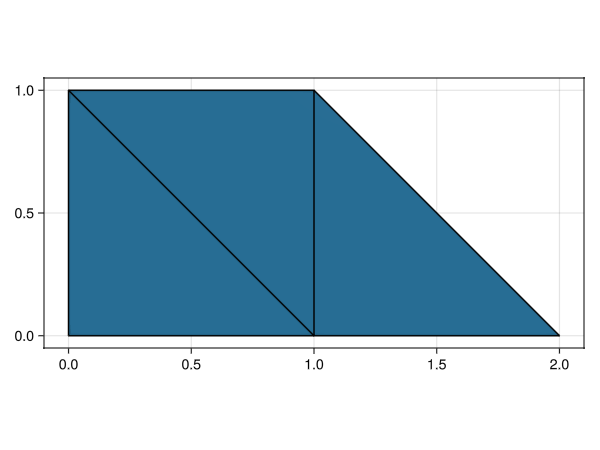
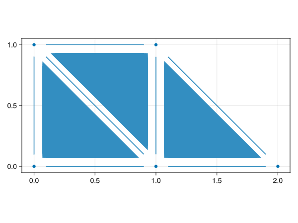
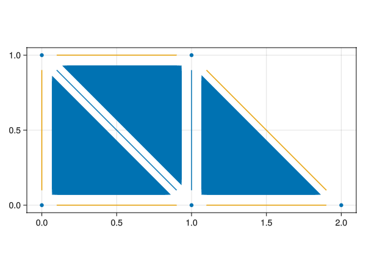
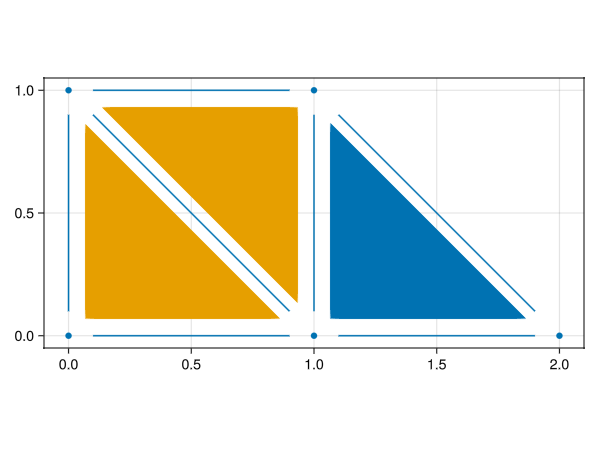
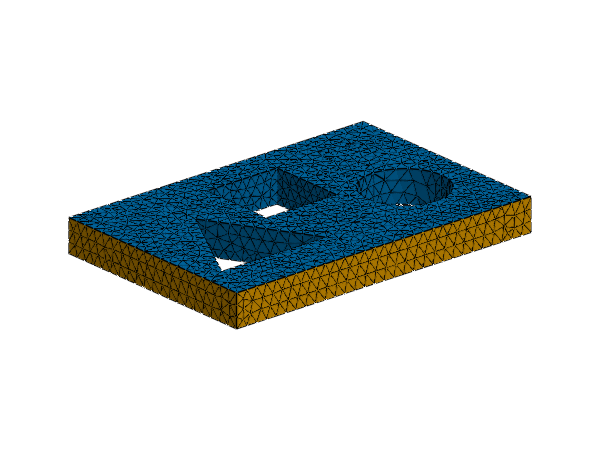
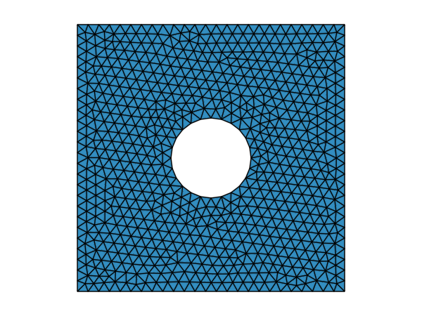

Meshes
A mesh object in GalerkinToolkit contains all geometrical information needed in a finite element (FE) computation. A mesh is a set of polygons (or polytopes in general) which we refer to as faces or $d$-faces, where $d$ is the face parametric dimension. We call vertices, edges, surfaces, and volumes to faces of 0, 1, 2, and 3 dimensions respectively. Meshes also include additional metadata, including face groups used to identify particular faces in the mesh, e.g., to impose boundary conditions.
It is worth noting that GalerkinToolkit is not a mesh generation library. The mesh implementation is designed to provide the rich geometrical information needed in FE methods, rather than mesh generation. Meshes are often generated with external tools and then transformed into GalerkinToolkit objects with helper functions such as mesh_from_gmsh.
Code dependencies
We use the following dependencies in the code snippets in this page.
import GalerkinToolkit as GT
import GLMakie
import Makie
import StaticArraysIn GalerkinToolkit we load dependencies from the Julia standard library with using statements, and from other packages with import statements. The latter forces to qualify functions with the package name, which explicitly reveals their origin. We do not qualify functions from the standard library since they are well known by Julia programmers.
Mesh specification
All types implementing meshes are subtypes of AbstractMesh. Important features of a mesh include:
- A mesh can potentially contain faces with different number of dimensions. I.e., the same mesh object can include vertices, edges, surfaces, and volumes. The number of dimensions of a mesh is the maximum number of dimension of its faces.
- The number of dimensions of a mesh can be smaller or equal to the number of ambient dimension. The latter is the number of components in a node coordinate vector.
- A mesh might or might not represent a cell complex. However, many algorithms require to work with a cell complex.
- Physical faces are defined using reference interpolation spaces and node coordinates. A physical face $F=\varphi(\hat F)$ is defined by transforming a reference face $\hat F$ with a mapping $\varphi: \hat F \rightarrow \mathbb{R}^D$, where D is the number of ambient dimensions. The mapping is defined as $\varphi(\hat x) = \sum_i \hat s_i(\hat x) x_{(F,i)}$. Function $\hat s_i: \hat F \rightarrow \mathbb{R}$ is the scalar basis function number $i$ in the reference (interpolation) space of $F$. The vector $x_{(F,i)}$ contains the coordinates of the local node $i$ in face $F$.
Functions to create and to work with meshes are listed in docstring of AbstractMesh.
GalerkinToolkit.AbstractMesh — Typeabstract type AbstractMesh <: AbstractType endAbstract type representing a computational mesh.
Level
Beginner
Constructors
Queries
Creating a mesh
Arbitrary mesh objects are defined from low-level quantities with function create_mesh.
GalerkinToolkit.create_mesh — Functioncreate_mesh(;kwargs...)Build an arbitrary mesh object.
See also cartesian_mesh, mesh_from_msh, and mesh_from_gmsh.
Level
Intermediate
Keyword arguments
node_coordinates: The vector containing the coordinates of all mesh nodes.node_coordinates[i]is the coordinate vector for global node numberi.face_nodes: A highly-nested vector containing the node ids for each face in the mesh.node_coordinates[n]withn=face_nodes[d+1][i][k]is the global node coordinate vector for local node numberkin faceiof dimensiond. The objectface_nodes[d+1]is a long vector of small vectors of integers. It is often represented using aJaggedArrayobject that uses continuous linear memory for performance.reference_spaces: A nested tuple containing the reference spaces for faces.reference_spaces[d+1][i]is the reference space numberiin dimensiond. Reference interpolation spaces are defined with functions likelagrange_space.face_reference_id[optional]: A nested vector containing which reference space is assigned to each face.reference_sapces[d+1][r]withr=face_reference_id[d+1][i]is the reference space associated with face numberiof dimensiond. By default, all faces are assigned to the first reference space in its dimension.group_faces[optional]: A vector of dictionaries containing labeled groups of faces.group_faces[d+1][group_name]is a vector of integers containing the ids of the faces of dimensiondin the group namedgroup_name. These groups might overlap. By default, no faces groups are created.is_cell_complex=Val(false)[optional]:Val(true)if the input data represents a cell complex,Val(false)otherwise.normals=nothing[optinal]: Vector containing the normal vectors for the faces of maximum dimension of the mesh. This is relevant for meshes of dimensiondembedded ind+1dimensions as there is no way to tell which should be the orientation of the normals from the other quantities in the mesh.normals[f]gives the normal vector of face numberfof dimensiond=length(face_nodes)-1.
Example
In the following example, we generate and visualize a mesh of three first order triangles. Only faces of dimension 2 are present in this example. The arrays for vertices and edges are empty.
#Node coordinates
T = StaticArrays.SVector{2,Float64}
node_coordinates = T[(0,0),(1,0),(0,1),(1,1),(2,0)]
#Face nodes
face_nodes_0 = Vector{Int}[]
face_nodes_1 = Vector{Int}[]
face_nodes_2 = [[1,2,3],[2,3,4],[2,4,5]]
face_nodes = [
face_nodes_0,
face_nodes_1,
face_nodes_2]
#Reference spaces
reference_spaces_0 = ()
reference_spaces_1 = ()
order = 1
triangle = GT.unit_simplex(Val(2))
triangle3 = GT.lagrange_space(triangle,order)
reference_spaces_2 = (triangle3,)
reference_spaces = (
reference_spaces_0,
reference_spaces_1,
reference_spaces_2)
#Create mesh
mesh = GT.create_mesh(;
node_coordinates,
face_nodes,
reference_spaces)
#Visualize
axis = (;aspect=Makie.DataAspect())
shading = Makie.NoShading
GT.makie_surfaces(mesh;axis,shading)
GT.makie_edges!(mesh;color=:black)
Example
In this other slightly more complex example, we define a mesh including faces of different dimensions: surfaces, edges and vertices. To be able to see all faces in the visualization, we need to "shrink" them. Otherwise, the surfaces would hide the edges and vertices.
#Face nodes
face_nodes_0 = [[1],[3]]
face_nodes_1 = [[1,2],[2,5],[5,4]]
face_nodes_2 = [[1,2,3],[2,3,4],[2,4,5]]
face_nodes = [
face_nodes_0,
face_nodes_1,
face_nodes_2]
#Reference spaces
vertex = GT.unit_simplex(Val(0))
vertex1 = GT.lagrange_space(vertex,order)
segment = GT.unit_simplex(Val(1))
segment2 = GT.lagrange_space(segment,order)
reference_spaces_0 = (vertex1,)
reference_spaces_1 = (segment2,)
reference_spaces_2 = (triangle3,)
reference_spaces = (
reference_spaces_0,
reference_spaces_1,
reference_spaces_2)
#Create mesh
mesh = GT.create_mesh(;
node_coordinates,
face_nodes,
reference_spaces)
#Visualize
axis = (;aspect=Makie.DataAspect())
shrink = 0.8
GT.makie_surfaces(mesh;axis,shading,shrink)
GT.makie_edges!(mesh;dim=1,shrink)
GT.makie_vertices!(mesh;dim=0)
Cell complexes
The mesh object described above is general enough to describe cell or polyhedral complexes, but it is not guaranteed that the mesh is indeed a cell complex. For instance, none of the meshes in the two last examples is a cell complex. The first one has no vertices nor edges. The second one has only few vertices and edges, but many are missing. One can complete a given mesh with all low-dimensional faces needed to be a cell complex with function complexify. Calling is_cell_complex on the returned mesh, will give true.
For function complexify to work, neighboring faces should share node ids. I.e., duplicated nodes are not allowed in the input mesh. Otherwise, duplicated faces might be generated, or the functions might not work at all.
Example
Let us complete the mesh we generated in the last example into a cell complex.
#Convert
mesh2 = GT.complexify(mesh)
@assert GT.is_cell_complex(mesh2)
#Visualize
GT.makie_surfaces(mesh2;axis,shading,shrink)
GT.makie_edges!(mesh2;dim=1,shrink)
GT.makie_vertices!(mesh2;dim=0)
Note that the mesh contains now all low-dimensional faces.
Mesh topology
When a mesh is a cell complex, there are well-defined face incidence relationships. All face incidence relations are stored in an object called mesh topology. A mesh topology is represented by the type AbstractTopology.
GalerkinToolkit.AbstractTopology — Typeabstract type AbstractTopologyAbstract type representing the incidence relations in a cell complex.
Level
Intermediate
Constructors
Queries
Incidence relations
A mesh topology is obtained with function topology called on a given mesh object: topo = GT.topology(mesh). The mesh needs to be a cell complex for this to work. Then, one uses function face_incidence on the topology object to get the incidence relations. GT.face_incidence(topo,D,d) is a long vector of small vectors of integers, often implemented with a JaggedArray.
- For
d<D,GT.face_incidence(topo,D,d)[F]is a vector of integers containing the ids of the faces of dimensiondon the boundary of face numberFof dimensionD. - For
d<D,GT.face_incidence(topo,d,D)[f]is a vector of integers containing the ids of the faces of dimensionDaround the face numberfof dimensiond. - For
d==D,GT.face_incidence(topo,D,D)[F] == [F].
Example
Let us get some of the incidence relations for the cell complex we generated above.
topo = GT.topology(mesh2)
surface_to_edges = GT.face_incidence(topo,2,1)3-element PartitionedArrays.JaggedArray{Int32, Int32}:
[1, 4, 5]
[5, 6, 7]
[6, 2, 3]This output is read as follows. Surface 1 has edges 1, 4, and 5 on its boundary; surface 2 has edges 5, 6, 7 on its boundary; etc.
edge_to_surfaces = GT.face_incidence(topo,1,2)7-element PartitionedArrays.JaggedArray{Int32, Int32}:
[1]
[3]
[3]
[1]
[1, 2]
[2, 3]
[2]According to this output, edge 1 touches surface 1, edge 2 touches surface 3, etc. We can also see that there are two interior edges touching two surfaces. Edge 5 touches surfaces 1 and 2, and edge 6 touches surfaces 2 and 3.
Reference topologies
The reference faces in a mesh are also cell complexes. For instance, a reference volume has surfaces, edges, and vertices on its boundary. The incidence relation between the faces in a reference face are obtained using a reference topology. Reference topologies are accessed with function reference_topologies given a topology object.
GalerkinToolkit.reference_topologies — Functionreference_topologies(topo)
reference_topologies(topo,d)
reference_topologies(topo,Val(d))Return the list (a vector or a tuple) of reference topologies in topo of dimension d. If the second argument is omitted, then the function returns a collection such that reference_topologies(topo)[d+1] is equivalent to reference_topologies(topo,Val(d)).
The face reference topology of face f of dimension d, is accessed as reference_topologies(topo,d)[r] with r=face_reference_id(topo,d)[f].
See also face_reference_id.
Level
Intermediate
The rationale behind accessing reference topologies is analogous to accessing reference spaces in a mesh. Note, however, that the face reference ids in a mesh mesh, GT.face_reference_id(mesh,d) might be different from the ones in the corresponding mesh topology topo, GT.face_reference_id(topo,d), since different interpolation spaces can be defined on the same reference face (e.g., in p-adaptive methods).
A reference topology object behaves like any other topology object and can be queried with the methods from the AbstractTopology interface.
Example
We get the reference topology of the first 2-face of the previously generated topology, which corresponds to a reference triangle. Then, we show the incidence relation between edges and vertices, i.e., for each edge which are the vertices on its boundary.
#Get the reference topology
f = 1
r = GT.face_reference_id(topo,2)[f]
ref_topo = GT.reference_topologies(topo,2)[r]
#See the edge to vertex relations
edge_to_vertices = GT.face_incidence(ref_topo,1,0)3-element PartitionedArrays.JaggedArray{Int32, Int32}:
[1, 2]
[1, 3]
[2, 3]The first edge goes from vertex 1 to 2, the second edge from vertex 1 to 3, and the third edge from vertex 2 to 3.
Permutations
If a mesh is a cell complex, each face in the boundary of a face is also explicitly contained in the mesh. However, the incidence relations of these two faces are the same but might be stored in different order.
Let us consider a topology object topo and two integers d<D. We get the incident relations D_d = GT.face_incidence(topo,D,d), d_0 = GT.face_incidence(topo,d,0) and D_0 = GT.face_incidence(topo,D,0). Consider face number v in dimension D. The d-faces on its boundary are given in vector D_d[v]. Consider the integer in l position in this list, namely s=D_d[v][l]. s is the id of a face of dimension d. The 0-faces on the boundary of v are in D_0[v] and on the boundary of s are in d_0[s]. Now, consider the reference topology of face v, namely ref_topo_v. We get this incidence relation from the reference topology: ref_d_0 = GT.face_incidence(ref_topo_v,d,0). This gives us an alternative way of obtaining the 0-faces of s, namely D_0[ref_d_0[l]]. That is, we can take the id s and compute directly d_0[s], or we can go to the neighbor face v and compute D_0[ref_d_0[l]] using the local id l corresponding to s in v. The vectors d_0[s] and D_0[ref_d_0[l]] contain the same vertex ids, but not in the same order!
To fix this issue we provide the permutation P that transforms one vector into the other, namely d_0[s][P] == D_0[ref_d_0[l]]. For d==1, the permutation vector P is either [1,2] or [2,1] since an edge has two vertices. In general, the possible permutations are enumerated and stored in the reference topology associated with face s, namely ref_topo_s. They are accessed with function vertex_permutations in this way: k_P = GT.vertex_permutations(ref_topo_s). This is a vector of vectors containing all permutations. To get the permutation P from this list, we use function face_permutation_ids. First we get an index into the list of permutations with k=GT.face_permutation_ids(topo,D,0)[v][l] and using the index k, we get the permutation from the list P = k_P[k].
This information is needed in many situations, including the generation of high-order interpolation spaces and integration of jump and average terms on interior faces in discontinuous Galerkin methods.
Face groups
Face groups allow us to select specific faces in a mesh for different modeling purposes: impose boundary conditions, define different equations in different parts of the mesh etc. A face group is a vector of integers containing the ids of the faces in this group plus a string containing a name for this group. This groups are stored using a dictionary that maps strings to vectors (group names to group definitions) in a per dimension basis (one dictionary per dimension). The vector contains faces of the same dimension, but it is possible define groups containing faces of different dimensions by splitting them in a vector per dimension. Face groups can overlap and can be added after the mesh object is created.
Face groups are accessed and added using function group_faces.
GalerkinToolkit.group_faces — Functiongroup_faces(mesh)
group_faces(mesh,d)Return the dictionary containing the faces in each group in dimension d. If d is omitted, it returns the dictionaries for all dimensions in a vector. I.e., calling group_faces(mesh,d) is equivalent to group_faces(mesh)[d+1].
The faces of dimension d in group group are group_faces(mesh,d)[group_name], where group_name is a string with the group name. One can create new groups by adding new keys to these dictionaries as long as the key is not already present. Calling group_faces(mesh,d)[new_group_name] = faces_in_newgroup will add a new group to dimension d with name equal to the string new_group_name with faces in vector faces_in_newgroup.
See also group_names.
Level
Beginner
Common face groups
GalerkinToolkit provides a number of functions that generate commonly used face groups.
These function do what the name suggests (see the docstrings for further details). The first one is often use to impose boundary conditions and the second one in discontinuous Galerkin methods to define interior penalty terms. They are often called under the hood when calling functions like boundary and skeleton.
Example
Let us add some face groups to the last mesh we created. We add a group for the boundary edges, for the interior edges, and a group for the two first surfaces.
GT.group_boundary_faces!(mesh2;group_name="boundary")
GT.group_interior_faces!(mesh2;group_name="interior")
GT.group_faces(mesh2,2)["foo"] = [1,2]We can also visualize the faces with colors telling if a face belongs to a group or not. We can visualize the mesh faces labeled as "boundary" in orange color, and the rest in blue:
color = GT.FaceColor("boundary")
blue = Makie.wong_colors()[1]
orange = Makie.wong_colors()[2]
colormap = [blue,orange]
GT.makie_surfaces(mesh2;axis,shrink,shading,color,colormap)
GT.makie_edges!(mesh2;dim=1,shrink,color,colormap)
GT.makie_vertices!(mesh2;dim=0,color,colormap)
Idem, but now visualizing the group "foo".
color = GT.FaceColor("foo")
GT.makie_surfaces(mesh2;axis,shrink,shading,color,colormap)
GT.makie_edges!(mesh2;dim=1,shrink,color,colormap)
GT.makie_vertices!(mesh2;dim=0,color,colormap)
Gmsh meshes
Meshes generated with gmsh can be transformed into GalerkinToolkit mesh objects using functions mesh_from_gmsh and mesh_from_msh. The physical groups defined within gmsh will be transformed into face groups in the GalerkinToolkit mesh, which is useful to impose boundary conditions. We use Gmsh.jl under the hood as the wrapper to the Julia API of gmsh.
A mesh from a msh file
Function mesh_from_msh reads and crates a mesh object from a .msh file (the default format used by gmsh to export meshes).
GalerkinToolkit.mesh_from_msh — Functionmesh_from_msh(msh_file;kwargs...)Create a mesh object from a .msh file found in path msh_file.
See also mesh_from_gmsh and with_gmsh.
Keyword arguments
complexify=true[optional]: Ifcomplexify==true, the mesh will be completed with all low dimensional faces into a cell complex.renumber=true[optional]: Ifrenumber==true, thengmsh.model.mesh.renumberNodes()andgmsh.model.mesh.renumberElements()will be called.- Any other keyword argument will be passed to function
with_gmsh.
Level
Beginner
Example
We create a mesh from a .msh file and visualize it. In this case, we only visualize the 2-faces in the mesh. We color them according to the face group named "sides". Faces in the group are visualized in orange and other faces in blue. This face group is only defined for 2-faces. If you visualize the 3-faces (as by default), you would not see this face group.
#Read the mesh
assets_dir = normpath(joinpath(@__DIR__,"..","..","..","assets"))
msh_file = joinpath(assets_dir,"model.msh")
mesh = GT.mesh_from_msh(msh_file)
#Visualize it
fig = Makie.Figure()
ax = Makie.Axis3(fig[1,1];aspect=:data)
Makie.hidespines!(ax)
Makie.hidedecorations!(ax)
color = GT.FaceColor("sides")
GT.makie_surfaces!(mesh;dim=2,color,colormap)
GT.makie_edges!(mesh;color=:black)
Meshes from the gmsh API
It is also possible to generate meshes in Julia code using the gmsh API and then convert them to GalerkinToolkit objects. This is done with two functions: See also with_gmsh and mesh_from_gmsh.
GalerkinToolkit.with_gmsh — Functionwith_gmsh(f[;options])A safe way of initialize and finalize the gmsh module. The given function is called f(gmsh) on the gmsh module after is has been initialized. The module is finalized automatically when the function returns.
The optional keyword argument options is a vector for pairs k=>v containing gmesh options. Each of these options are set with gmsh.option.setNumber(k,v) just after gmsh has been initialized.
Level
Beginner
GalerkinToolkit.mesh_from_gmsh — Functionmesh_from_gmsh(gmsh::Module;complexify=true)Create a mesh objects from the current state of the gmsh module. If complexify==true, the mesh will be completed with all low dimensional faces into a cell complex.
See also mesh_from_msh and with_gmsh.
Level
Beginner
Example
We generate a simple 2d mesh with the gmsh Julia API.
#Generate mesh with GMSH Julia API
mesh = GT.with_gmsh() do gmsh
mesh_size=0.04
T=2
N=100
R = 0.15
dim = 2
gmsh.option.set_number("General.Verbosity", 2)
rect_tag = gmsh.model.occ.add_rectangle(0,0,0,1,1)
circle_tag = gmsh.model.occ.add_circle(0.5,0.5,0,R)
circle_curve_tag = gmsh.model.occ.add_curve_loop([circle_tag])
circle_surf_tag = gmsh.model.occ.add_plane_surface([circle_curve_tag])
gmsh.model.occ.cut([(dim,rect_tag)],[(dim,circle_surf_tag)]);
gmsh.model.occ.synchronize()
domain_tags = [1]
outer_tags = [6,7,8,9]
inner_tags = [5]
gmsh.model.model.add_physical_group(dim,domain_tags,-1,"domain")
gmsh.model.model.add_physical_group(dim-1,outer_tags,-1,"outer")
gmsh.model.model.add_physical_group(dim-1,inner_tags,-1,"inner")
gmsh.option.set_number("Mesh.MeshSizeMax",mesh_size)
gmsh.model.mesh.generate(dim)
#Transform it to a mesh object
GT.mesh_from_gmsh(gmsh)
end
#Visualize
fig = Makie.Figure()
ax,sc = GT.makie_surfaces(fig[1,1],mesh;axis,shading)
GT.makie_edges!(mesh;color=:black)
Makie.hidespines!(ax)
Makie.hidedecorations!(ax)
This page was generated using Literate.jl.